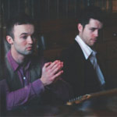

D’Amato’s soul was made to spread funk and love through his music, and he knew it at a young age. He is truly an old soul; it’s not every day you meet a young white boy singing Prince when he was seven. In one of his songs he says, “My life is the meaning of the term purple rain.” With inspirations derived from funk, soul, jazz and the blues, he adds a flair of hip hop and comedy to his music. D’Amato isn’t just a musician...[read more]
IN THIS ISSUE:
 Kiings
DJ duo, chemists, “ballers”, and two souls of Milwaukee production royalty, Sean Foran and Chris Siegel, known as Kiings, came together one fateful day to hone in on their craft of mixing and creating music that will awaken your senses. How can Kiings be explained in words? Just listen to their song “Explain Myself” sampling Quadron...[read more]
Kane Place Record Club
The six piece high energy big band sounds of the Kane Place Record Club has been gracing Milwaukee stages for about three years now. The band is a melding of different individuals and different tastes that infused together make up a truly unique sound equipped with an electric violin, a bass, guitar, keys, a saxophone...[read more]
Sydnee B
Syd Bencriscutto grew up surrounded by music, it’s no wonder he named his latest album Role Model, he was surrounded by them. With a mother who sang in local bands, and a father who played the keyboard for a local soul group, he was destined to become the versatile rapper Sydnee B. With a number of influences, he went from...[read more]
Webster X
Sam Ahmed was a stoop kid with a dream and and a soul full words that were waiting to be released. A year ago, he would have never imagined he’d be where he is now. Webster X is a culmination of those words like the dictionaries they came from, he spits rhymes about the times...[read more]
Grace Weber
Grace Weber may have left Milwaukee eight years ago to study music in New York, but Milwaukee is her home and her heart. From a young age Weber knew she was going to be a singer, even at the young age of seven when she sang for a second grade talent show and brought her teacher to tears and learned the true power behind the voice...[read more]
Klassik
If you’ve followed Kellen Abston aka Klassik’s music career in Milwaukee you will have heard the evolution of an artist, and those of you from Milwaukee have been able to witness it. His beats just keep getting more sophisticated, and that’s even after his impressive first album Death of a Beatmaker. He has an amazing ability to use...[read more]
Vic and Gab
Vic and Gab have been singing together for practically their whole lives. From early beginnings belting Rush in the car with their father, to their first official band at the age of 16 as Carmello, where they made an entire album in Spanish. They have come a long way to where they are now, musically as well as geographically...[read more]
Esh The Singer
Lesha Sturdivant, more widely known as Esh, is a brown girl in a rock world. Besides standing out in a crowd with her bright red short pixie cut, her booming voice can capture and captivate a room. There was something about rock music that always spoke to her soul. Growing up she was influenced by great rock gods...[read more]
Fresh Cut Collective
Fresh Cut Collective is no stranger to the scene, but they are always keeping things fresh. They have been around since 2008, and have been constantly evolving their sound and their band since then. Sometimes they are a one man band, sometimes they are seven plus members...[read more]